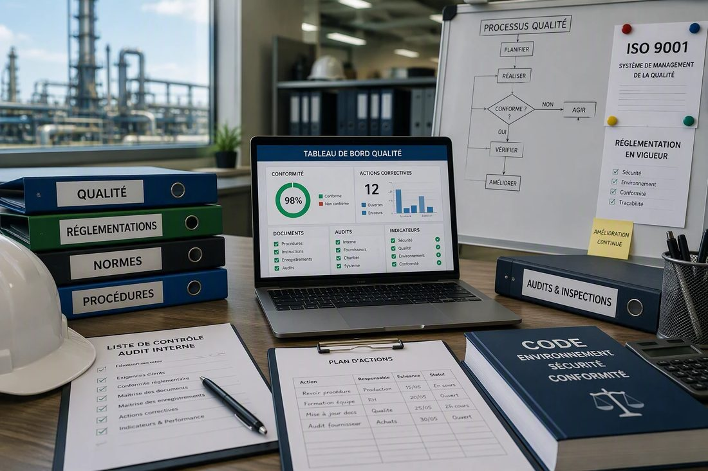
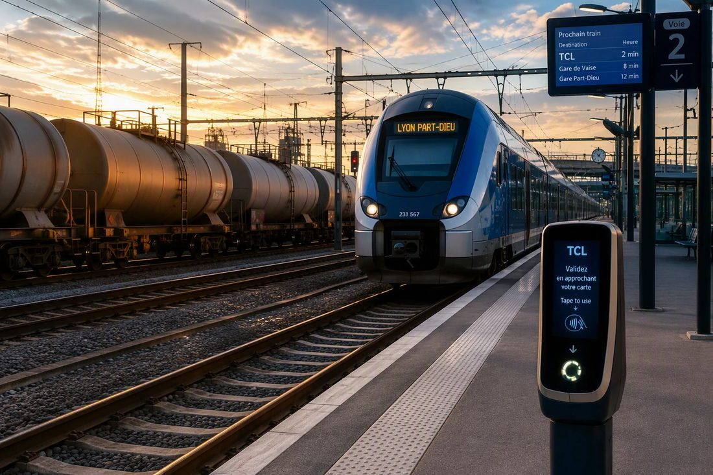

Information & data governance
EDM/ECM, repositories, metadata, document quality and compliance.
Information & Data Governance · Digital Transformation
Document engineering project manager working at the intersection of business and technology. I design reliable, compliant document information systems — architecture, data governance and workflow automation — for demanding industrial environments: rail, energy, transport.
Profile
Document engineering project manager working at the intersection of business and technology. I analyse business needs, design document architecture (SharePoint, metadata, repositories, KPIs) and automate workflows (Power Automate) to turn information into reliable, compliant systems.
CNAM / INTD education (MSc-level, Level 7) and experience gained in demanding industrial environments — rail, gas, transport. Rigour, analytical thinking, anticipation and change management guide every mission.
Expertise
Not just a document manager — a link between business, data, systems and digital transformation.
EDM/ECM, repositories, metadata, document quality and compliance.
SharePoint source/target model, indexing, structuring and document lifecycle.
Power Automate workflows, real-time KPI dashboards, digital transformation.
Document control, regulatory compliance, change management.
Domains

Procedures, standards, audits and regulatory compliance.
Structuring, securing and leveraging information for decision-making.

Document control, wagon acceptance, coordination with manufacturers.
Document control, technical quality in demanding environments.
Professional experience
Skills & tools
EDM/ECM, standards, process modelling, quality and compliance.
Power Automate (advanced), SharePoint architecture, workflow design, KPI-driven steering.
Needs analysis, specifications, planning, coordination, change management.
Document databases, digitisation and archiving, information monitoring.
Solutions deployed or administered across missions.
Education
CNAM / INTD, Paris
Université Jean Moulin Lyon 3
ENAM-UAC, Benin
Languages
Community involvement
LEO Club Lyon Oxygène — member (2022 – 2024)
LEO Club Cotonou Étoile Dorée — secretary (2021)
AFEV Lyon — mentor (2021 – 2022)